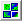
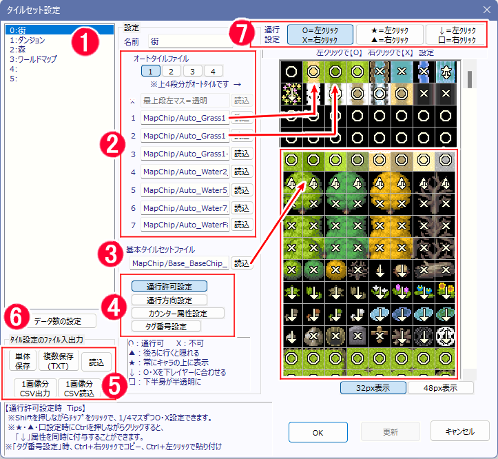
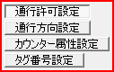
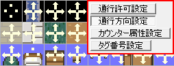
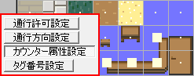
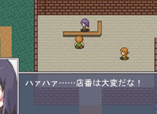
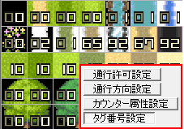

【タイルセット設定】
タイルセット設定は、メインウィンドウのこのアイコンボタンをクリックすることで開くことができます。

1：タイルセットの名前を指定します。
2：「オートタイルファイル」：右側の白い直線で区切られた画像内の1/2段目の各チップに配置されるオートタイルのファイル名を一つずつ指定します。
オートタイルとは、自動で境界が設定されるタイル、またはアニメーションするタイルのことです。
上部のオートタイルファイル1/2/3/4で1～4段目を切り替えることができます
3：「基本タイルセットファイル」：右側の白い直線で区切られた画像内の3段目以下の全てのチップの画像ファイル名を指定
ファイル名は「読込」ボタンを押すことで、画像を確認しながら設定することができます。
4：チップに対する設定方法を4通りに切り替えるボタンです。
・通行許可設定
各チップを通行できるかどうかを指定します。詳細は「7:通行設定」参照。

・通行方向設定
各チップの通行方向を一部だけにしたいときに使います。

記号の意味は以下の通りです。
→ その方向は通行可能
・ その方向は通行不可能
・カウンター属性設定
そのチップがカウンター属性を持つかどうかを指定します、主人公とイベントの間にカウンター属性を持つチップが間にある場合、キャラの間が離れていてもイベントが起動できるようになります。
|  記号の意味は以下の通りです。 ■ カウンター属性を持つ ・ カウンター属性を持たない |
 カウンター属性のチップを挟んだイベント起動の例 |
・タグ番号指定
チップにタグ番号を指定します。ここで指定したタグ番号はイベントコマンド「変数操作+」にて、指定した座標のチップのタグ番号を読み込むことができるようになっています。チップの属性を区別する際に利用できます（たとえば森で敵と遭遇した場合と草原で遭遇した場合で背景を変えるなど）。

左クリックで番号が+1、右クリックで-1されます。タグ番号は0～99番の間で指定できます。
なお、タグ「0」番は、透明なタグとして扱われます。
コマンド『変数操作＋』で「最も上にあるタイルのタグ番号」を取得したとき、
タグ「0」番のチップは無視されます。
5：タイル設定のファイル入出力
選択中のタイル設定を、ファイルとして入出力することができます。
・単体保存 ： 1つのタイルセット設定をまるごと.tilesetファイルとして出力します。
・複数保存(TXT) ： 複数のタイルセット設定を.txtファイルとして出力します。
・読込 ： .tileset、または.txtファイルを読み込みます。
・1画像分CSV出力/読込 ： 1画像分の通行設定をCSVファイルとして入出力します。
※ここで出力した通行設定CSVファイルは、同じ名前の画像を読み込むときに自動で読み込むか聞かれます。
※通行設定CSVファイルは直接、タイル部分にドラッグ＆ドロップして通行設定を読み込ませることができます。
6：データ数の設定
タイルセットのセット数を変更できます。
7：通行許可設定
各チップを通行できるかどうかを指定します。状態は6種類あり、設定種の選択状態、左右クリックで状態が切り替わります。（※）
それぞれの意味は以下の通りです。
○＝通行可能
×＝通行不能
▲＝通行可能、かつ、後ろにいくとキャラクターが隠れるチップ（ただし「すり抜けON」のキャラは常にこのチップに隠れてしまいます）。
※この▲チップは実質、「1マス分の高さしかない」点に注意してください。たとえば通行可能な▲チップをぎっしり並べた中で1.5マスの身長のキャラを歩かせると、0.5マス分は常に見えることになります。
※もっと厳密に言うと、「▲チップと同じY座標、または▲チップより小さいY座標にいるキャラはチップの後ろに隠れる」という挙動をします（この挙動には、動作指定で指定できる「高さ」は影響しません）
★＝通行可能、かつ、常にキャラクターの上に描画されるチップ
↓＝通行可能/不能を下のレイヤーに合わせます。下のレイヤーがない場合は通行可能です。
□（半分塗りつぶされている） ＝ そのチップに乗るとキャラの足下がチップサイズの半分だけ（20/16/8ピクセル）半透明になります。ただし、キャラの「高さ」（動作指定で設定可能）が1以上の場合は半透明になりません。
※Shiftを押しながらチップをクリックすると、1/4マスずつ○・×設定できます。
Ctrlを押しながら○・×・★・▲・□を設定すると「↓」属性を同時に付与することができます。
※▲・★チップより上のレイヤーに置いたチップには、▲・★属性が自動的に付与されます（▲より★が優先されます）。
これは基本的な描画の性質上、絵を「上に塗り重ねていく」ことしかできないためです。
※タグ番号設定時、Ctrl+右クリックでタグをコピー、Ctrl+左クリックでタグを貼り付けできます。